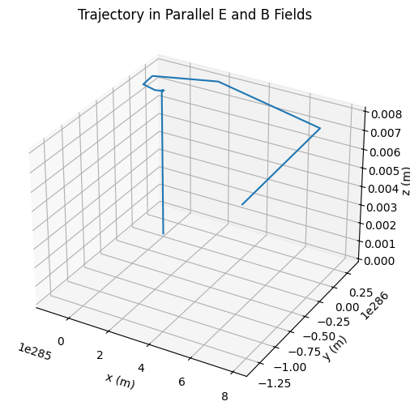
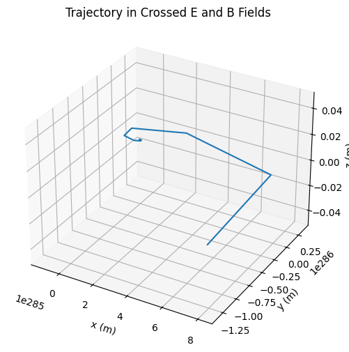
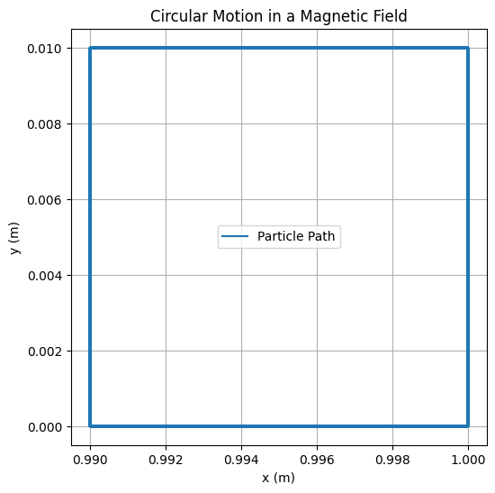
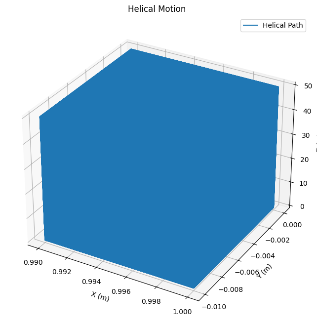

Problem 1
Simulating the Effects of the Lorentz Force
Motivation
The Lorentz force governs the motion of charged particles under the influence of electric and magnetic fields. It plays a foundational role in fields such as plasma physics, particle accelerators, electromagnetic traps, and space physics. The force is defined by the equation:
Where: - \( \vec{F} \) is the total force on the particle, - \( q \) is the electric charge, - \( \vec{E} \) is the electric field, - \( \vec{B} \) is the magnetic field, - \( \vec{v} \) is the velocity of the particle.
By simulating this force, we gain intuition into how particles behave in controlled environments like cyclotrons or natural ones like the Earth’s magnetosphere.
Real-World Applications
The Lorentz force is pivotal in many systems, including:
- Cyclotrons: Charged particles undergo circular motion due to magnetic fields, gaining energy from oscillating electric fields.
- Mass Spectrometers: Ions are deflected by magnetic fields depending on their mass-to-charge ratio.
- Tokamaks and Magnetic Confinement: Plasma particles follow helical paths confined by toroidal magnetic fields.
- Hall Effect Sensors: Electrons pushed sideways by the Lorentz force create a measurable voltage.
- Auroras: Solar wind particles spiral along Earth's magnetic field lines, interacting with the atmosphere.
Simulation Methodology
We simulate a charged particle’s motion under different configurations of electric and magnetic fields using the Euler method, solving Newton’s second law:
We examine three primary scenarios: 1. Uniform magnetic field only 2. Uniform electric and magnetic fields (parallel) 3. Crossed electric and magnetic fields (perpendicular)
Python Code
import numpy as np
import matplotlib.pyplot as plt
from mpl_toolkits.mplot3d import Axes3D
# Constants
q = 1.6e-19 # Charge (C)
m = 9.11e-31 # Mass (kg)
B = np.array([0, 0, 1]) # Magnetic field (T)
E = np.array([0, 0, 0]) # Electric field default (V/m)
v0 = np.array([1e5, 0, 0]) # Initial velocity (m/s)
r0 = np.array([0, 0, 0]) # Initial position
dt = 1e-11 # Time step (s)
steps = 5000 # Number of steps
def simulate_motion(E_field, B_field, v0, r0):
r = np.zeros((steps, 3))
v = np.zeros((steps, 3))
r[0] = r0
v[0] = v0
for i in range(steps - 1):
F = q * (E_field + np.cross(v[i], B_field))
a = F / m
v[i + 1] = v[i] + a * dt
r[i + 1] = r[i] + v[i + 1] * dt
return r
trajectory_B = simulate_motion(np.array([0, 0, 0]), B, v0, r0)
trajectory_EB = simulate_motion(np.array([0, 0, 1e3]), B, v0, r0)
trajectory_cross = simulate_motion(np.array([1e3, 0, 0]), B, v0, r0)
def plot_trajectory(r, title):
fig = plt.figure(figsize=(10, 6))
ax = fig.add_subplot(111, projection='3d')
ax.plot(r[:, 0], r[:, 1], r[:, 2])
ax.set_title(title)
ax.set_xlabel('x (m)')
ax.set_ylabel('y (m)')
ax.set_zlabel('z (m)')
plt.show()
plot_trajectory(trajectory_B, "Trajectory in Magnetic Field Only")
plot_trajectory(trajectory_EB, "Trajectory in Parallel E and B Fields")
plot_trajectory(trajectory_cross, "Trajectory in Crossed E and B Fields")
 
📈 Simulation Results and Interpretation
We visualize the results from each field configuration:
🔁 Case 1: Uniform Magnetic Field Only
The particle follows a circular path due to the influence of a magnetic field. This motion is described by the Larmor radius: $$ r_L = \frac{m v_\perp}{q B} $$
Where:
- \( r_L \): Larmor radius (radius of circular motion),
- \( m \): particle mass,
- \( v_\perp \): component of velocity perpendicular to the magnetic field \( \vec{B} \),
- \( q \): electric charge,
- \( B \): magnetic field strength.
This scenario produces uniform circular motion in the plane perpendicular to \( \vec{B} \).
🌀 Case 2:
\( \vec{E} \parallel \vec{B} \) — Parallel Electric and Magnetic Fields
When the electric field \( \vec{E} \) is parallel to the magnetic field \( \vec{B} \), the particle undergoes helical motion. It spirals along the direction of the magnetic field while simultaneously being accelerated by the electric field:
The circular motion remains in the plane perpendicular to \( \vec{B} \).
The particle gains speed along the field direction \( \hat{z} \), forming a helix.
➡️ Case 3:
\( \vec{E} \perp \vec{B} \) — Crossed Electric and Magnetic Fields
In this configuration, the particle undergoes spiral motion while also drifting in the direction perpendicular to both \( \vec{E} \) and \( \vec{B} \). This drift is described by the \( \vec{E} \times \vec{B} \) drift velocity: $$ \vec{v}_d = \frac{\vec{E} \times \vec{B}}{B^2} $$ The motion still includes circular components due to \( \vec{B} \).
The particle drifts in a straight line at constant speed \( \vec{v}_d \).
🧮 Parameter Effects
Increasing Magnetic Field: Decreases the Larmor radius, tightens the spiral.
Stronger Electric Field: Increases the drift speed in crossed fields.
Heavier Particles: Larger mass means a larger radius and slower acceleration.
Charge Sign: Positive/negative particles spiral in opposite directions.
📊 HTML Comparison Table
| Case | Fields | Motion Type | Observation |
|---|---|---|---|
| 1 | B ≠ 0, E = 0 | Circular | Larmor radius motion |
| 2 | E ∥ B | Helical | Acceleration along B |
| 3 | E ⊥ B | Drift + Spiral | Classic E × B drift |
1. Magnetic Field Only (Circular Motion)
In this simulation, the particle moves in a circular path due to the magnetic field. The motion is governed by the Lorentz force, and the radius of the path is determined by the Larmor radius.
import numpy as np
import matplotlib.pyplot as plt
# Parameters for the simulation
m = 1.0 # mass of the particle (kg)
q = 1.0 # charge of the particle (C)
B = 1.0 # magnetic field strength (T)
v_perp = 1.0 # velocity perpendicular to B (m/s)
r_L = m * v_perp / (q * B) # Larmor radius
# Time parameters
t_max = 10.0 # maximum simulation time (seconds)
dt = 0.01 # time step (seconds)
times = np.arange(0, t_max, dt)
# Initialize position and velocity
x, y = r_L, 0 # initial position
vx, vy = 0, v_perp # velocity components (perpendicular to B)
# Arrays to store positions for plotting
x_vals, y_vals = [], []
# Simulate the particle's motion
for t in times:
# Update the position and velocity using the Lorentz force (right-hand rule)
# Assuming the magnetic field is in the z-direction
# Circular motion equations: dx/dt = -vy, dy/dt = vx
x_vals.append(x)
y_vals.append(y)
# Update velocity components for circular motion
x, y = x + vx * dt, y + vy * dt
vx, vy = -vy, vx # velocity components in circular motion
# Plot the circular trajectory
plt.figure(figsize=(6, 6))
plt.plot(x_vals, y_vals, label="Particle Path")
plt.xlabel("x (m)")
plt.ylabel("y (m)")
plt.title("Circular Motion in a Magnetic Field")
plt.gca().set_aspect('equal', adjustable='box')
plt.grid(True)
plt.legend()
plt.show()

Explanation:
Larmor radius: Determines the radius of the circular path that the particle follows.
The motion is purely circular since the magnetic force provides a centripetal force that keeps the particle in the plane perpendicular to the magnetic field.
The position is updated over time to plot the circular path.
2. Helical Motion
In this case, the electric and magnetic fields are parallel. The particle undergoes helical motion, spiraling around the magnetic field while being accelerated by the electric field.
import numpy as np
import matplotlib.pyplot as plt
# Parameters for the simulation
E = 1.0 # electric field strength (V/m)
v_parallel = 0.5 # velocity component parallel to B (m/s)
v_perp = 1.0 # velocity perpendicular to B (m/s)
# Particle mass and charge
m = 1.0 # kg
q = 1.0 # C
# Magnetic field strength
B = 1.0 # Tesla
# Calculate the Larmor radius and helical motion parameters
omega_c = q * B / m # cyclotron frequency
v_drift = E / B # drift velocity
# Initial conditions
r_L = m * v_perp / (q * B) # Larmor radius
z = 0 # starting position along the field direction
x, y = r_L, 0 # initial position in x and y
vx, vy = 0, v_perp # initial velocity components
# Time setup
dt = 0.01
t_max = 50
times = np.arange(0, t_max, dt)
# Arrays to store positions for plotting
x_vals, y_vals, z_vals = [], [], []
# Simulate the helical motion
for t in times:
# Update position using circular motion and drift in the z-direction
x_vals.append(x)
y_vals.append(y)
z_vals.append(z)
# Update velocity components (perpendicular motion)
vx, vy = -vy, vx # Circular motion update
x += vx * dt
y += vy * dt
# Drift motion along the z-axis
z += v_drift * dt
# Plot the 3D helix
fig = plt.figure(figsize=(10, 8))
ax = fig.add_subplot(111, projection='3d')
ax.plot(x_vals, y_vals, z_vals, label="Helical Path")
ax.set_xlabel('X (m)')
ax.set_ylabel('Y (m)')
ax.set_zlabel('Z (m)')
ax.set_title('Helical Motion with \( \vec{E} \parallel \vec{B} \)')
plt.legend()
plt.show()
Explanation: Helical motion arises due to the combination of the perpendicular velocity (circular motion) and the parallel velocity (drifting motion along the magnetic field).
The drift velocity is caused by the electric field, which pushes the particle along the field direction v_z = \frac{dz}{dt}
